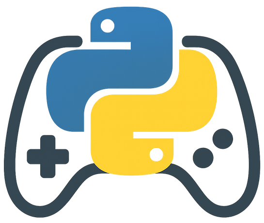

Interlude: GameSir T1d Python package
2025-05-04
- Learn how to package and publish a Python library to PyPI using the modern uv toolchain.
- See how to wrap the GameSir T1d Bluetooth controller for use with Python and pygame.
- Discover how to scan for your controller, connect, and read inputs using a pygame-compatible API.
- Get practical, step-by-step instructions for project setup, dependency management, and testing.
- Access example scripts and source code to quickly integrate the controller into your own projects.
Let’s package up the Gamesir T1d wrapper
For some context: this post is a tangent on this article about making the GameSir T1d controller work with pygame.
I know, no one is ever going to use it apart from me. The Gamesir T1d is ancient, and the use case (using it with pygame to control a Tello) is also not very common. But I’m here to learn and try things out, and this gives me the opportunity to play with:
- uv: this “new” package manager is pretty great, and I need to use it more often to get rid of old habits (pip, venv, pyenv, etc.).
- Create a pypi package: I have never created and published a pypi package, so fun to give that a shot.
- Claude code: I have used this in the past and it seems promising, so let’s vibe-code our way to a package.
But first, a logo! :P

Six steps to a published package
Step 1: Ditch Claude code
It is really very easy to create a pypi package, but Claude code overcomplicated things, and in the end it got stuck. So the first step: ditch Claude code. I’m not a big fan of vibe coding (at least not today), and this confirms again why.
Step 2: Create a project
uv has a built-in way to create projects we want to publish as a package, using the --lib switch:
uv init --lib gamesir-t1d
cd gamesir-t1dNext, we need to add bleak as a dependency:
uv add bleakFor the example code to work we also need to add pygame.
uv add pygameIt creates the files (and virtual env) we need as a starting point:
.
├── pyproject.toml
├── README.md
├── src
│ └── gamesir_t1d
│ └── __init__.py
└── uv.lockStep 3: Add modules
This is simply moving the code we created in the previous post post into the right spots. Which results in:
.
├── LICENSE
├── pyproject.toml
├── README.md
├── src
│ └── gamesir_t1d
│ ├── __init__.py
│ ├── controller.py
│ ├── examples
│ │ └── pygame_example.py
│ └── tools
│ ├── __init__.py
│ └── ble_scanner.py
└── uv.lockMake sure the pyproject.toml has the right metadata. The latest version is here: pyproject.toml.
An interesting feature is to include scripts in a package. After installing a package you can run these scripts on the command line. This is done in the pyproject.toml as:
[project.scripts]
gamesir-scan = "gamesir_t1d.tools.ble_scanner:run_scanner"This is perfect for us to make the BLE scanner available, so users can figure out the name of their controller.
Step 4: Build and publish
uv buildThis creates two files in the /dist directory:
- gamesir_t1d-0.1.1-py3-none-any.whl
- gamesir_t1d-0.1.1.tar.gz
which are the binary and the source version of the package.
Let’s publish it to test.pypi.org first:
- Create an account on test.pypi.org
- Obtain an API token
- Run this command:
uv uv publish --token pypi-TEST_TOKEN_HERE --publish-url https://test.pypi.org/legacy/Step 5: Test
To test it, we create a new project and install the package there.
uv init gstest
cd gstest
pip install --index-url https://test.pypi.org/simple/ --extra-index-url https://pypi.org/simple gamesir-t1d
python -c "import gamesir_t1d; print(gamesir_t1d.__version__)"If that prints the version number, it all works!
Now, let’s try the scanner (make sure the controller is switched on):
$ gamesir-scan
Make sure the GameSir-T1d controller is turned on and in pairing mode.
(Typically hold power button until LEDs flash rapidly)
Press Enter to start scanning...
Starting BLE scan for GameSir-T1d controller...
Scanning for BLE devices (timeout: 3.0s)...
Found 14 Bluetooth devices:
1. Name: None, Address: E6682D99-DC5A-EE5A-9E95-DAC5BF163FC1
...
6. Name: Gamesir-T1d-39BD, Address: FDF00BC3-1DEE-1525-0B34-7E2D3391C401
...
13. Name: None, Address: 19EC6BCE-BE63-CD90-E9D6-9C91EA838008
14. Name: None, Address: 3222F9B7-2970-77BF-6814-9FB82F843839
Found controller: Gamesir-T1d-39BD, Address: FDF00BC3-1DEE-1525-0B34-7E2D3391C401
Attempting to connect to Gamesir-T1d-39BD...
Successfully connected to Gamesir-T1d-39BD!
Available services and characteristics:
Service: 00008650-0000-1000-8000-00805f9b34fb
Characteristic: 00008651-0000-1000-8000-00805f9b34fb
Properties: ['read', 'write', 'notify', 'indicate']
Characteristic: 00008655-0000-1000-8000-00805f9b34fb
Properties: ['read', 'write', 'notify', 'indicate']
Characteristic: 0000865f-0000-1000-8000-00805f9b34fb
Properties: ['read', 'write', 'notify', 'indicate']
Service: 0000180a-0000-1000-8000-00805f9b34fb
Characteristic: 00002a24-0000-1000-8000-00805f9b34fb
Properties: ['read']
Characteristic: 00002a25-0000-1000-8000-00805f9b34fb
Properties: ['read']
# Assuming you've installed the package with the [examples] extra
Characteristic: 00002a27-0000-1000-8000-00805f9b34fb
Properties: ['read']
Characteristic: 00002a26-0000-1000-8000-00805f9b34fb
Properties: ['read']
Characteristic: 00002a50-0000-1000-8000-00805f9b34fb
Properties: ['read']
Connection successful. Press Ctrl+C to exit...Now we have the controller ID, let’s run a basic script:
from gamesir_t1d import GameSirT1dPygame
# Create the controller object with your controller's name
controller = GameSirT1dPygame("Gamesir-T1d-39BD") # Replace XXXX with your controller ID
# Initialize the controller (starts BLE connection)
controller.init()
# Read axes and buttons using the pygame-compatible interface
left_x = controller.get_axis(0) # Range: -1.0 to 1.0
left_y = controller.get_axis(1) # Range: -1.0 to 1.0
a_button = controller.get_button(0) # 1 for pressed, 0 for not pressed
# Check if the controller is connected
if controller.is_connected():
print("Controller is connected!")
# Clean up when done
controller.quit()Scanning for Gamesir-T1d-39BD...
Found Gamesir-T1d-39BD at FDF00BC3-1DEE-1525-0B34-7E2D3391C401
Connecting...
Connected!
Controller is connected!Step 6: Publish for real!
It all seems to work, so now we can publish the package on pypi.org! Again, create an account and generate an API token first, then:
uv publish --token pypi-YourTokenAnd there we have it, our package: pypi.org/project/gamesir-t1d/!
We repeat the same steps as before for testing:
uv init gstest2
cd gstest2
uv add gamesir-t1d
python -c "import gamesir_t1d; print(gamesir_t1d.__version__)"No need to run the scanner, the controller ID is still what is was :)
Now, run the examples included in the package:
from gamesir_t1d.examples.pygame_example import test_without_pygame
test_without_pygame("Gamesir-T1d-XXXX") # Replace XXXX with your controller IDand
from gamesir_t1d.examples import run
run("Gamesir-T1d-XXXX") # Replace XXXX with your controller IDThis will run the test as shown in this video.
The source code can be found here.
Wrapping it up!
Haha, dad joke there.
There is nothing to wrap up anyway.
If you are interested in reading more about drones, coding, and machine learning (soon), start here: Code, Fly & AI.